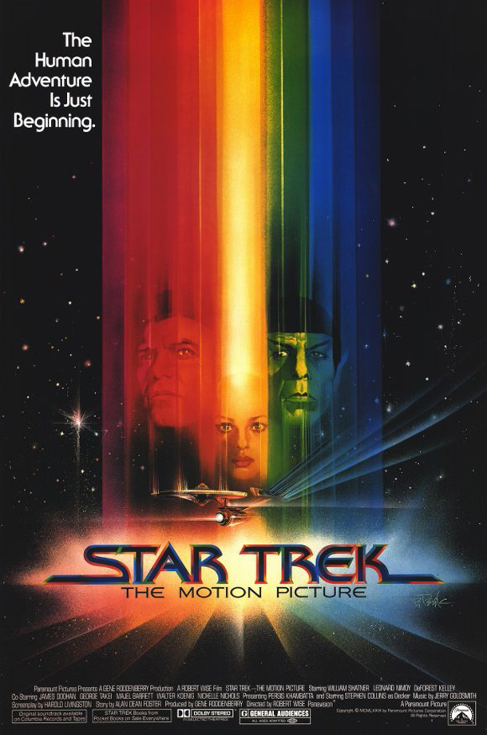

Póster original
Introducción
Star Trek: The Motion Picture (en España, Star Trek: la película) es una película estadounidense de ciencia ficción que forma parte del universo de Star Trek, creado por Gene Roddenberry. Fue la primera película de la franquicia basada en la serie de los 60 (Star Trek: La Serie Original), y se estrenó el 7 de diciembre de 1979. Su director fue el ganador del Óscar de la Academia Robert Wise; era su tercer film de ciencia ficción.
Star Trek: The Motion Picture revitalizó la franquicia, que continuaría la historia con nueve secuelas y dos precuelas.
Comienzo
La nave estelar USS Enterprise está bajo un gran reacondicionamiento y su excomandante, James T. Kirk, ha sido ascendido a Almirante y ahora es Jefe de Operaciones de la Flota Estelar. Una poderosa fuerza alienígena, en forma de una masiva nube de energía con una longitud de 82 unidades astronómicas, es detectada en espacio Klingon y parece dirigirse rumbo a la Tierra. A su paso, la nube destruye tres naves Klingons y la estación espacial de la flota Epsilon 9.
Como única nave en rango del alcance, la flota envía la Enterprise para interceptar la nube, acelerando su reacondicionamiento, el cual deberá ser probado en el transcurso de la misión asignada. El Almirante Kirk toma el mando de la nave, lo cual disgusta al capitán Willard Decker, quien ha supervisado las mejoras como nuevo oficial. Con varios de los ex miembros de la tripulación a bordo, la Enterprise inicia su viaje.